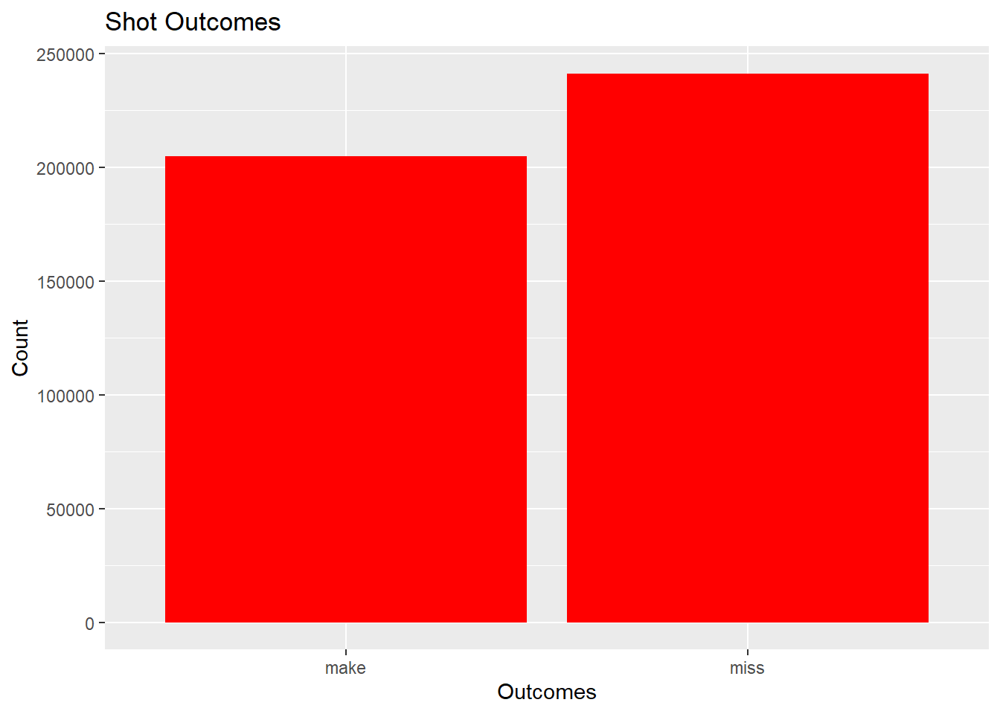
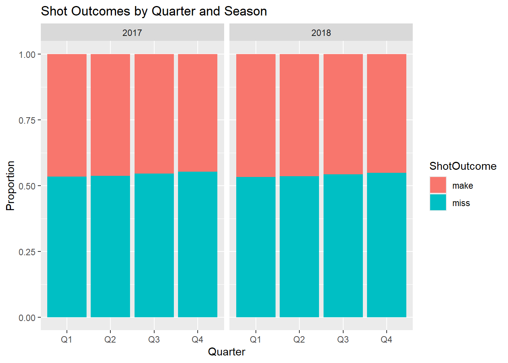
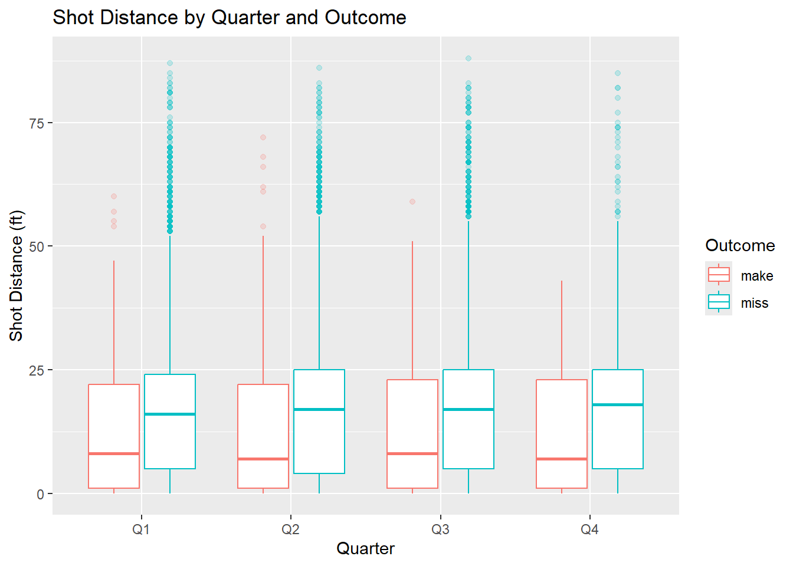
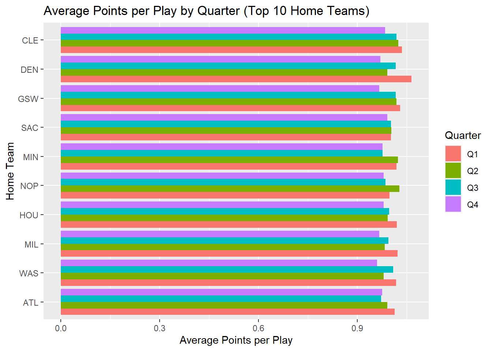
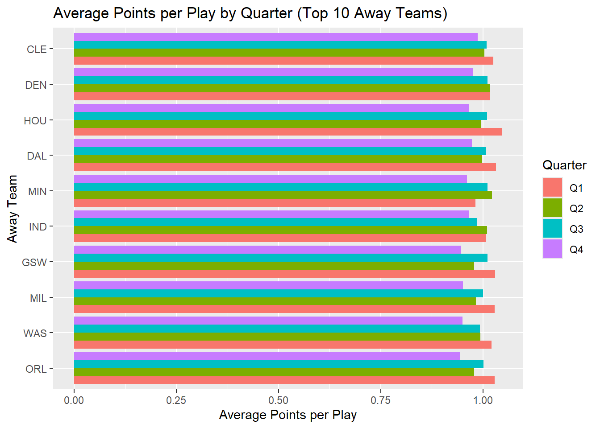
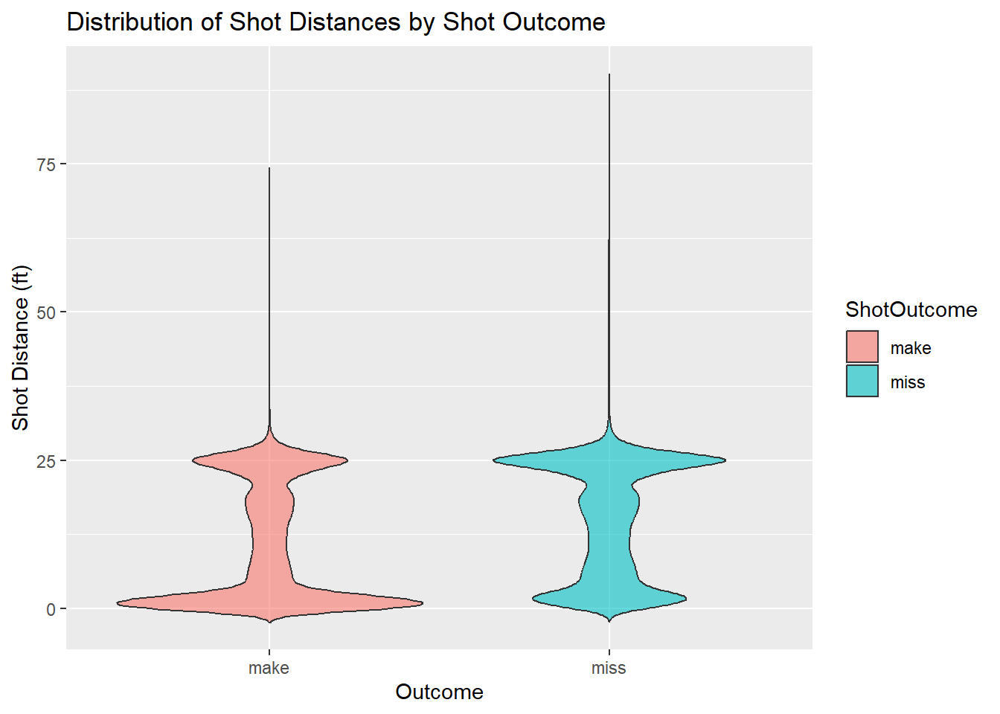

── Attaching core tidyverse packages ──────────────────────── tidyverse 2.0.0 ──
✔ dplyr 1.1.4 ✔ readr 2.1.5
✔ forcats 1.0.0 ✔ stringr 1.5.1
✔ ggplot2 3.5.2 ✔ tibble 3.3.0
✔ lubridate 1.9.4 ✔ tidyr 1.3.1
✔ purrr 1.0.4
── Conflicts ────────────────────────────────────────── tidyverse_conflicts() ──
✖ dplyr::filter() masks stats::filter()
✖ dplyr::lag() masks stats::lag()
ℹ Use the conflicted package (<http://conflicted.r-lib.org/>) to force all conflicts to become errors
library(shiny)
Reading/Managing NBA Play-by-Play Data (2016-2021)
#Reading in NBA Play-by-Play data sets.nba_2016 <-read_csv("rawdata/csv/NBA_PBP_2015-16.csv")
Rows: 601557 Columns: 40
── Column specification ────────────────────────────────────────────────────────
Delimiter: ","
chr (34): URL, GameType, Location, Date, WinningTeam, AwayTeam, AwayPlay, H...
dbl (5): Quarter, SecLeft, AwayScore, HomeScore, ShotDist
time (1): Time
ℹ Use `spec()` to retrieve the full column specification for this data.
ℹ Specify the column types or set `show_col_types = FALSE` to quiet this message.
Rows: 596645 Columns: 40
── Column specification ────────────────────────────────────────────────────────
Delimiter: ","
chr (34): URL, GameType, Location, Date, WinningTeam, AwayTeam, AwayPlay, H...
dbl (5): Quarter, SecLeft, AwayScore, HomeScore, ShotDist
time (1): Time
ℹ Use `spec()` to retrieve the full column specification for this data.
ℹ Specify the column types or set `show_col_types = FALSE` to quiet this message.
Rows: 590868 Columns: 40
── Column specification ────────────────────────────────────────────────────────
Delimiter: ","
chr (34): URL, GameType, Location, Date, WinningTeam, AwayTeam, AwayPlay, H...
dbl (5): Quarter, SecLeft, AwayScore, HomeScore, ShotDist
time (1): Time
ℹ Use `spec()` to retrieve the full column specification for this data.
ℹ Specify the column types or set `show_col_types = FALSE` to quiet this message.
Rows: 614516 Columns: 40
── Column specification ────────────────────────────────────────────────────────
Delimiter: ","
chr (34): URL, GameType, Location, Date, WinningTeam, AwayTeam, AwayPlay, H...
dbl (5): Quarter, SecLeft, AwayScore, HomeScore, ShotDist
time (1): Time
ℹ Use `spec()` to retrieve the full column specification for this data.
ℹ Specify the column types or set `show_col_types = FALSE` to quiet this message.
New names:
Rows: 539265 Columns: 41
── Column specification
──────────────────────────────────────────────────────── Delimiter: "," chr
(34): URL, GameType, Location, Date, WinningTeam, AwayTeam, AwayPlay, H... dbl
(5): Quarter, SecLeft, AwayScore, HomeScore, ShotDist lgl (1): ...41 time (1):
Time
ℹ Use `spec()` to retrieve the full column specification for this data. ℹ
Specify the column types or set `show_col_types = FALSE` to quiet this message.
• `` -> `...41`
Rows: 97673 Columns: 40
── Column specification ────────────────────────────────────────────────────────
Delimiter: ","
chr (34): URL, GameType, Location, Date, WinningTeam, AwayTeam, AwayPlay, H...
dbl (5): Quarter, SecLeft, AwayScore, HomeScore, ShotDist
time (1): Time
ℹ Use `spec()` to retrieve the full column specification for this data.
ℹ Specify the column types or set `show_col_types = FALSE` to quiet this message.
Inspection of the data sets to see if they are suitable to merge into one larger data set.
#Putting the data sets into a list.nba_list <-list(nba_2016, nba_2017, nba_2018, nba_2019, nba_2020, nba_2021)#Getting the union of all column names to see which columns are missing from each dataset.nba_colnames <- nba_list |>map(names) |>unlist() |>unique() #Identifying missing columns.nba_missingcols <-map(nba_list, ~setdiff(nba_colnames, names(.x))) |>set_names(2016:2021)nba_missingcols
Verifying compatibility between data sets for a merge & merging the data sets
#Going to double check that all data sets share the same column names (after removing X).map(list(nba_2016, nba_2017, nba_2018, nba_2019, nba_2020, nba_2021), names)
#Combining all 6 data sets into one larger data setnba_combined <-bind_rows(nba_2016, nba_2017, nba_2018, nba_2019, nba_2020, nba_2021)
Subsetting Data
Selecting Key Columns
#Filtering to keep only observations from 2017 and 2018, only keeping columns having to do with shooting and scoringpbp_condensed <- nba_combined |>filter(year %in%c(2017,2018),!is.na(ShotType) |!is.na(FreeThrowShooter)) |>select(year, Quarter, HomeTeam, AwayTeam, ShotType, ShotOutcome, ShotDist, FreeThrowShooter, FreeThrowOutcome, FreeThrowNum, HomeScore, AwayScore)
Creating 2 new variables (Points & Quarter Label). Assigning Point Values for 3-pointers, 2-pointers, and free throws. Creating a QuarterLabel variable to only address regulation (most games are playing in regulation and do not need overtime)
#Assigning points values and placing in a new variable "Points"pbp_condensed <- pbp_condensed |>mutate(Points =case_when( ShotOutcome =="make"&str_detect(ShotType, "3") ~3, ShotOutcome =="make"&str_detect(ShotType, "2") ~2, FreeThrowOutcome =="make"~1,TRUE~0 ) )#Re-coding Quarters (Q1-Q4, OT1-OT4). Creating a variable pbp_condensed <- pbp_condensed |>filter(Quarter %in%1:4) |>mutate(QuarterLabel =factor(paste0("Q", Quarter),levels =c("Q1", "Q2", "Q3", "Q4") ))#Checking to verify intended resultspbp_condensed |>select(Quarter, QuarterLabel, ShotType, ShotOutcome, FreeThrowOutcome, Points) |>head(15)
# A tibble: 15 × 6
Quarter QuarterLabel ShotType ShotOutcome FreeThrowOutcome Points
<dbl> <fct> <chr> <chr> <chr> <dbl>
1 1 Q1 2-pt layup make <NA> 2
2 1 Q1 2-pt hook shot miss <NA> 0
3 1 Q1 2-pt jump shot miss <NA> 0
4 1 Q1 2-pt layup make <NA> 2
5 1 Q1 2-pt jump shot make <NA> 2
6 1 Q1 3-pt jump shot miss <NA> 0
7 1 Q1 2-pt jump shot miss <NA> 0
8 1 Q1 3-pt jump shot miss <NA> 0
9 1 Q1 2-pt layup make <NA> 2
10 1 Q1 2-pt jump shot miss <NA> 0
11 1 Q1 <NA> <NA> make 1
12 1 Q1 <NA> <NA> miss 0
13 1 Q1 2-pt jump shot miss <NA> 0
14 1 Q1 3-pt jump shot miss <NA> 0
15 1 Q1 2-pt jump shot miss <NA> 0
Saving condensed data set to repo. Needed for the project to be self-contained.
#Quarter Distribution (only regulation)table(factor(pbp_condensed$QuarterLabel, levels =c("Q1", "Q2", "Q3", "Q4")))
Q1 Q2 Q3 Q4
139212 141954 140247 141188
#Shot Outcome x Quarteraddmargins(table(pbp_condensed$ShotOutcome, pbp_condensed$QuarterLabel, useNA ="no"))
Q1 Q2 Q3 Q4 Sum
make 54436 52196 50310 47833 204775
miss 62318 60345 59953 58630 241246
Sum 116754 112541 110263 106463 446021
#Home Team x Quarter (The amount of offensive plays run by the Home team per Quarter)addmargins(table(pbp_condensed$HomeTeam, pbp_condensed$QuarterLabel))
#Away Team x Quarter (The amount of offensive plays run by the Away team per Quarter)addmargins(table(pbp_condensed$AwayTeam, pbp_condensed$QuarterLabel))
These tables summarize categorical variables such as shot outcomes and quarters. The one-way tables show simple frequency counts (e.g., total made vs. missed shots), while the two-way tables explore relationships across quarters and teams.
#Points per play by Home Team (Top 10 shown for readability)pbp_condensed |>group_by(HomeTeam) |>summarise(n =n(),mean_points =mean(Points, na.rm =TRUE),sd_points =sd(Points, na.rm =TRUE) ) |>slice_max(mean_points, n =10)
#Points per play by Away Team (Top 10 shown for readability)pbp_condensed |>group_by(AwayTeam) |>summarise(n =n(),mean_points =mean(Points, na.rm =TRUE),sd_points =sd(Points, na.rm =TRUE) ) |>slice_max(mean_points, n =10)
# A tibble: 10 × 4
AwayTeam n mean_points sd_points
<chr> <int> <dbl> <dbl>
1 CLE 22128 1.01 1.08
2 DEN 17851 1.01 1.07
3 HOU 20300 1.00 1.09
4 DAL 16616 1.00 1.08
5 MIN 18242 0.994 1.04
6 GSW 22107 0.992 1.06
7 IND 18525 0.992 1.05
8 MIL 18644 0.991 1.05
9 WAS 19815 0.989 1.05
10 ORL 17586 0.988 1.06
These numerical summaries describe how shot distance and points per play vary across quarters and home/away teams.
Outcome Counts bar-plot
#bar-plot shows makes and misses. NA's dropped (there are plays that did not result in a shot)ggplot(filter(pbp_condensed, !is.na(ShotOutcome)), aes(x = ShotOutcome)) +geom_bar(fill ="red") +labs(title ="Shot Outcomes", x ="Outcomes", y ="Count")

The outcome counts bar-plot above shows the distribution of shot outcomes. It can easily be seen that across all shots over the two years chosen, the league shot under 50% from the field.
Shot Outcome by Quarter (Faceted by Season) Multivariate bar-plot
#Multivariate bar-plot faceted by yearggplot(filter(pbp_condensed, !is.na(ShotOutcome)), aes(x =factor(QuarterLabel), fill = ShotOutcome)) +geom_bar(position ="fill") +facet_wrap(~ year) +labs(title ="Shot Outcomes by Quarter and Season", x ="Quarter", y ="Proportion")

The bar-plot above shows how shot outcomes differ by quarter and by season. The two years look pretty similar; both show a very slight increase in misses as the game progresses.
Shot Distance by Quarter (Colored by Outcome) Boxplot
#Average shot distance by quarter (not including plays that did not result in a shot attempt)ggplot(filter(pbp_condensed, !is.na(ShotOutcome)),aes(x = QuarterLabel, y = ShotDist, color = ShotOutcome)) +geom_boxplot(outlier.alpha =0.2) +labs(title ="Shot Distance by Quarter and Outcome", x ="Quarter", y ="Shot Distance (ft)", color ="Outcome")

The box-plot above shows the distribution of shot distances across quarters, colored by outcome. It shows subtle differences in where made shots tend to occur during the game.
Average Points by Home Team (Top 10) and by Away Team (Top 10) Grouped bar-plots
#Computing the Top 10 Home teams (points per play)top10_home <- pbp_condensed |>group_by(HomeTeam) |>summarise(overall =mean(Points, na.rm =TRUE), .groups ="drop") |>slice_max(overall, n =10)#Computing the Top 10 Away teams (points per play)top10_away <- pbp_condensed |>group_by(AwayTeam) |>summarise(overall =mean(Points, na.rm =TRUE), .groups ="drop") |>slice_max(overall, n =10)#Top 10 Home Teams in average points per play by Quarterpbp_condensed |>filter(HomeTeam %in% top10_home$HomeTeam) |>group_by(HomeTeam, QuarterLabel) |>summarise(mean_points =mean(Points, na.rm =TRUE), .groups ="drop") |>ggplot(aes(x =reorder(HomeTeam, mean_points), y = mean_points, fill = QuarterLabel)) +geom_col(position ="dodge") +coord_flip() +labs(title ="Average Points per Play by Quarter (Top 10 Home Teams)",x ="Home Team", y ="Average Points per Play", fill ="Quarter")

#Top 10 Away Teams in average points per play by Quarterpbp_condensed |>filter(AwayTeam %in% top10_away$AwayTeam) |>group_by(AwayTeam, QuarterLabel) |>summarise(mean_points =mean(Points, na.rm =TRUE), .groups ="drop") |>ggplot(aes(x =reorder(AwayTeam, mean_points), y = mean_points, fill = QuarterLabel)) +geom_col(position ="dodge") +coord_flip() +labs(title ="Average Points per Play by Quarter (Top 10 Away Teams)",x ="Away Team", y ="Average Points per Play", fill ="Quarter")

These grouped bar-plots display the average points per play by quarter for the top 10 scoring teams at home and on the road. The comparison highlights that several teams performed differently depending on location—for example, Sacramento ranked among the top teams in home scoring efficiency but did not appear in the top 10 for away performance.
Distribution of Shot Distances by Outcome Density Plot
ggplot(filter(pbp_condensed, !is.na(ShotOutcome)),aes(x = ShotOutcome, y = ShotDist, fill = ShotOutcome)) +geom_violin(trim =FALSE, alpha =0.6) +labs(title ="Distribution of Shot Distances by Shot Outcome", x ="Outcome", y ="Shot Distance (ft)")

The violin plot shows that made shots tend to cluster closer to the basket, while missed shots are more common from three-point range. The overall distribution emphasizes the modern offensive trend of reducing mid-range attempts in favor of high-value three-pointers and close-range finishes.
The EDA above gave a good overview of how scoring and shot selection looked across the 2017–2018 NBA seasons. The tables and summaries helped show overall patterns, while the visuals highlighted that most made shots came from close range or three-point distance, with fewer mid-range attempts. The team comparisons showed clear differences between home and away scoring efficiency. Overall, the analysis sets up a solid foundation for the upcoming app to explore these scoring trends interactively.
Shiny App
#Loading Librarylibrary(tidyverse)library(shiny)#Reloading Data Set for reproducibilitypbp_condensed <-readRDS("data/nba_scoring_subset_1718.rds")#Defining the UIui <-fluidPage(titlePanel("NBA Play-by-Play Subsetting App"),sidebarLayout(sidebarPanel(h2("Subset the Data"),#Categorical VariablesradioButtons(inputId ="quarter_filter",label ="Quarter:",choiceNames =c("All", "Q1", "Q2", "Q3", "Q4"),choiceValues =c("all", "Q1", "Q2", "Q3", "Q4") ),radioButtons(inputId ="outcome_filter",label ="Shot Outcome",choiceNames =c("All", "Made", "Missed"),choiceValues =c("all", "make", "miss") ),#Numeric Variablesh2("Numeric Variable Filters"),selectInput(inputId ="number1",label ="First numeric variable",choices =c("Shot Distance (ft)"="ShotDist", "Points Scored"="Points", "Home Team Total Points"="HomeScore", "Away Team Total Points"="AwayScore"),selected ="ShotDist" ),uiOutput("slider1"),selectInput(inputId ="number2",label ="Second numeric variable:",choices =c("Shot Distance (ft)"="ShotDist", "Points Scored"="Points", "Home Team Total Points"="HomeScore", "Away Team Total Points"="AwayScore"),selected ="Points" ),uiOutput("slider2"),br(),actionButton("apply_filters", "Apply Filters", class ="btn-primary") ),mainPanel(h3("Data Output"),plotOutput("plot_output"),tableOutput("subset_table") ) ))#Serverserver <-function(input, output, session){ output$slider1 <-renderUI({ x <- pbp_condensed[[input$number1]] rang <-range(x, na.rm =TRUE)sliderInput("range1", paste("Range for", input$number1),min =floor(rang[1]), max =ceiling(rang[2]), value = rang) }) output$slider2 <-renderUI({ x <- pbp_condensed[[input$number2]] rang <-range(x, na.rm =TRUE)sliderInput("range2", paste("Range for", input$number2),min =floor(rang[1]), max =ceiling(rang[2]), value = rang) })#Filters Logic rv <-reactiveValues(data = pbp_condensed)observeEvent(input$apply_filters, { df <- pbp_condensedif (input$quarter_filter !="all") { df <- dplyr::filter(df, QuarterLabel == input$quarter_filter) }if (input$outcome_filter !="all"){ df <- dplyr::filter(df, ShotOutcome == input$outcome_filter) }if (!is.null(input$range1)) { v1 <- input$number1 df <- dplyr::filter( df,!is.na(.data[[v1]]), .data[[v1]] >= input$range1[1], .data[[v1]] <= input$range1[2] ) }if (!is.null(input$range2)) { v2 <- input$number2 df <- dplyr::filter( df,!is.na(.data[[v2]]), .data[[v2]] >= input$range2[1], .data[[v2]] <= input$range2[2] ) } rv$data <- df })#Table output from the applied subset output$subset_table <-renderTable({validate(need(nrow(rv$data) >0 , "No rows match the current subset.")) colmns <-c("year","QuarterLabel","HomeTeam","AwayTeam","ShotType","ShotOutcome","ShotDist","Points", "HomeScore","AwayScore") rv$data |> dplyr::select(dplyr::all_of(intersect(colmns, names(rv$data)))) |>head(15) |> dplyr::mutate(year =as.character(year)) })}#Running the AppshinyApp(ui = ui, server = server)
Shiny applications not supported in static R Markdown documents